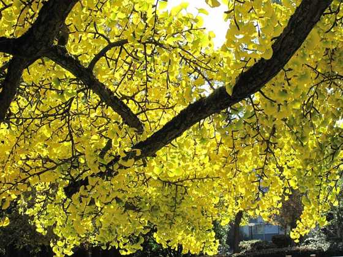
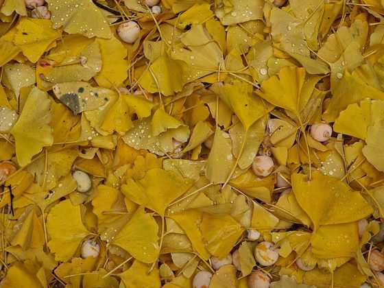
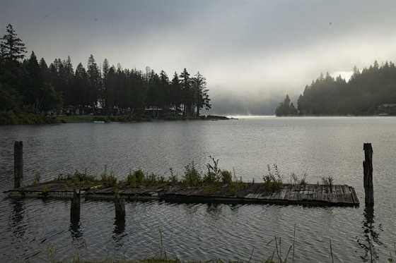
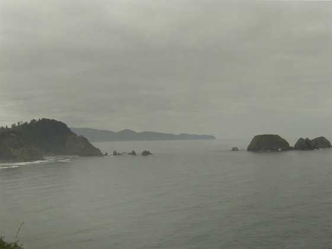

石川県白山市湊町の珈琲店
戦前の小さな洋館で、
ひっそりと、一杯の珈琲を。
古鶴堂は、月に数回、不定期に開く自家焙煎珈琲の店です。
お店のこと
古い洋館の、ゆっくりした時間。
Instagramのプロフィールによると、古鶴堂は「戦前に建てられた小さな小さな洋館」で、月に数回、不定期にひっそり開店しています。紹介ブログでは、店で焙煎した「本日の自家焙煎珈琲」が味わえること、営業は月2回ほどで日程はInstagramで告知されること、庭はガーデニングで手入れされアンティークが置かれていることが書かれています。マスターは初めての客にもやさしく接してくれたそうです。


情報源: Instagram @kotsurudou1018/河内晩柑.com「古鶴堂で美味しいコーヒーお持ち帰り」
店名の意味や建物の由来は確認できていないため記載していません。見出しなどの言い回しは制作側の表現です。
珈琲
本日の自家焙煎珈琲。
紹介ブログによると、すっきりタイプの本日の自家焙煎珈琲があり、ミルクと砂糖、小さなお菓子が添えられたそうです。メニューは玄関に掲示されているとのこと(当時の情報で、現在は異なる場合があります)。価格・営業時間・定休日は準備中です。

自家焙煎珈琲
店内焙煎の一杯。内容は営業日ごとに変わる場合があります。

ミルクと砂糖
珈琲に添えられるとの紹介があります。

器
古い洋館に似合う器の雰囲気をイメージした写真です。

ほっとひと息
詳細は準備中です。
庭と窓辺
秋は銀杏、そして海の近くの町。
店の近くには手取川や小舞子駅があります。写真は雰囲気を伝えるイメージです。





口コミ
こんな声が聞こえてきそうです。
古い洋館の雰囲気に、ほっとしました。珈琲もすっきりしていて、ゆっくり味わえました。
営業日をInstagramで確認して出かけました。お庭もすてきで、また行きたいです。
初めてでも店主さんがやさしく迎えてくれて、気持ちよく過ごせました。
上記は制作側が作成したイメージで、実際のお客様の声ではありません。
アクセス
営業日はInstagramで。
| 所在地 | 〒929-0217 石川県白山市湊町ヨ−３６ |
|---|---|
| 電話 | 準備中 |
| 営業時間 | 準備中(月に数回の不定期営業。日程はInstagramで告知) |
| 定休日 | 準備中 |
| 駐車場 | 準備中 |
| SNS | Instagram @kotsurudou1018 |